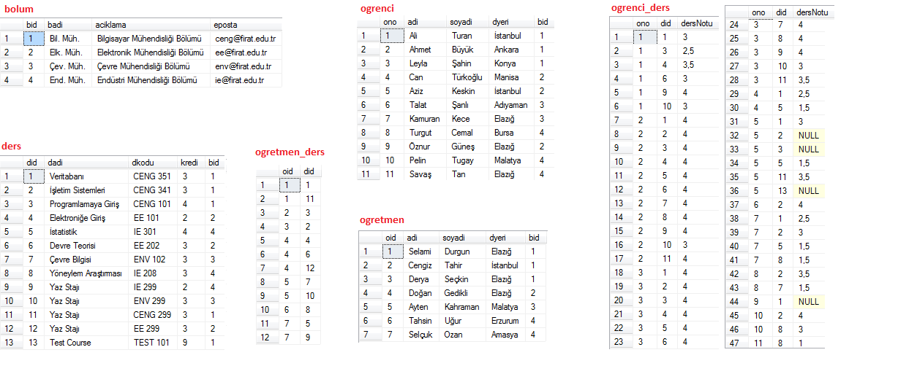

Aþaðýda üniversiteye ait basit bir veritabaný örneði verilmiþtir. Aþaðýdaki tablolarý oluþturmak için gerekli SQL sorgularýna bu linkten eriþebilirsiniz. Resmin aþaðýsýnda örnek sorular mevcuttur. Bu örneklerde istenen sorgularý yazmaya çalýþmanýz tavsiye edilir.